Kudu C++ client API
Main Page
Related Pages
Classes
Files
Class List
Class Index
Class Hierarchy
Class Members
Class Hierarchy
Go to the textual class hierarchy
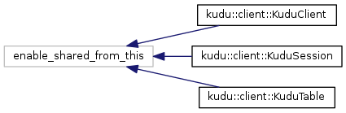
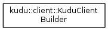
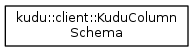
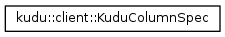
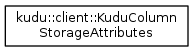
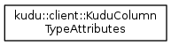
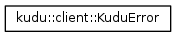
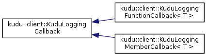
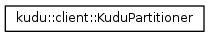
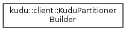
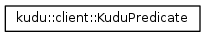
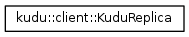
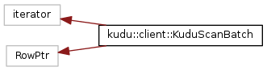
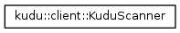
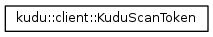
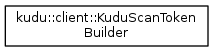
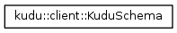
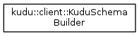
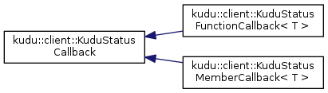
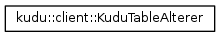
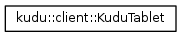
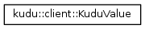
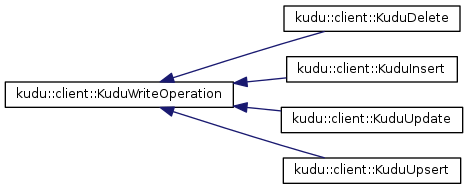
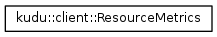
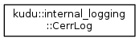
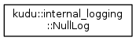
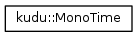
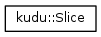
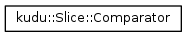
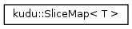
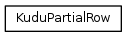
Generated for Kudu version 1.9.0 on Fri Mar 8 2019 03:36:23 by Doxygen 1.8.11
Copyright © 2019 The Apache Software Foundation.